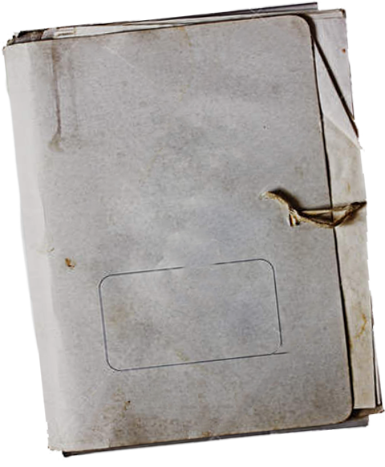
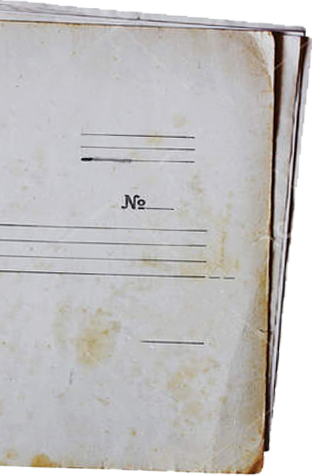
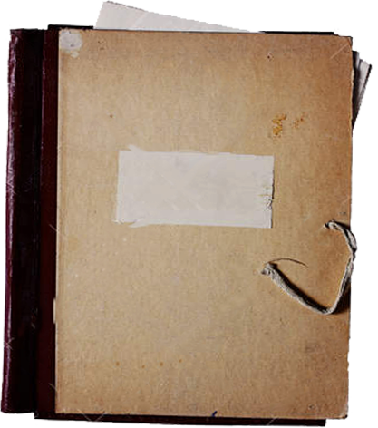
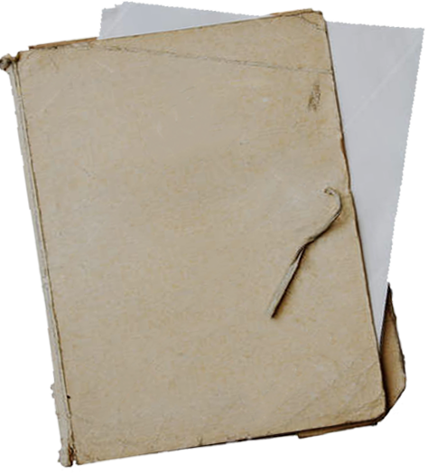
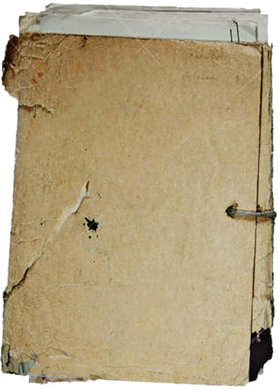
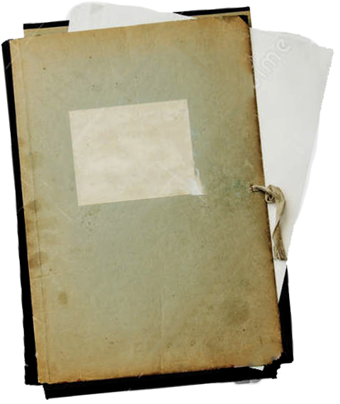

-  1919-1923
-  1923-1930
-  1930-1937
-  1937-1941
-  1941-1945
-  1945-1953
Красный террор
Революция 1917 года кардинально изменила обстановку в стране, а также ее структуру. Начавшаяся в связи с этим гражданская война породила новую карательную систему, а именно первые концентрационные лагеря.
2 Красный террор
Революция 1917 года кардинально изменила обстановку в стране, а также ее структуру. Начавшаяся в связи с этим гражданская война породила новую карательную систему, а именно первые концентрационные лагеря.
3 Красный террор
Революция 1917 года кардинально изменила обстановку в стране, а также ее структуру. Начавшаяся в связи с этим гражданская война породила новую карательную систему, а именно первые концентрационные лагеря.
4 Красный террор
Революция 1917 года кардинально изменила обстановку в стране, а также ее структуру. Начавшаяся в связи с этим гражданская война породила новую карательную систему, а именно первые концентрационные лагеря.
5 Красный террор
Революция 1917 года кардинально изменила обстановку в стране, а также ее структуру. Начавшаяся в связи с этим гражданская война породила новую карательную систему, а именно первые концентрационные лагеря.
6 Красный террор
Революция 1917 года кардинально изменила обстановку в стране, а также ее структуру. Начавшаяся в связи с этим гражданская война породила новую карательную систему, а именно первые концентрационные лагеря.